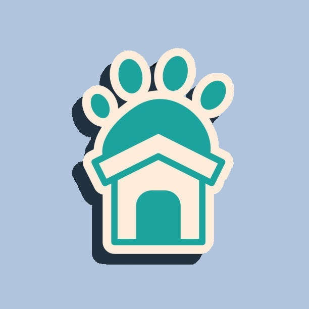

Home
Fave Pet
Helpful Links
Meet my Furbabies!
Useful links for Pet Owners
Chewy - online pet supplies retailer
https://www.chewy.com
Pet Supplies Plus - pet supplies retailer and pet salon services
https://www.petsuppliesplus.com
Petfinder - online search for adoptable pets
https://www.petfinder.com
Michigan Cat Rescue - Michigan based cat rescue, where I adopted 3 of my current 4 cats
https://www.facebook.com/Michigancatrescue
Furry Friends Rescue - Another Michigan based rescue, mostly cats, but occasionally have other animals
https://www.facebook.com/furryfriendsrescueinc
